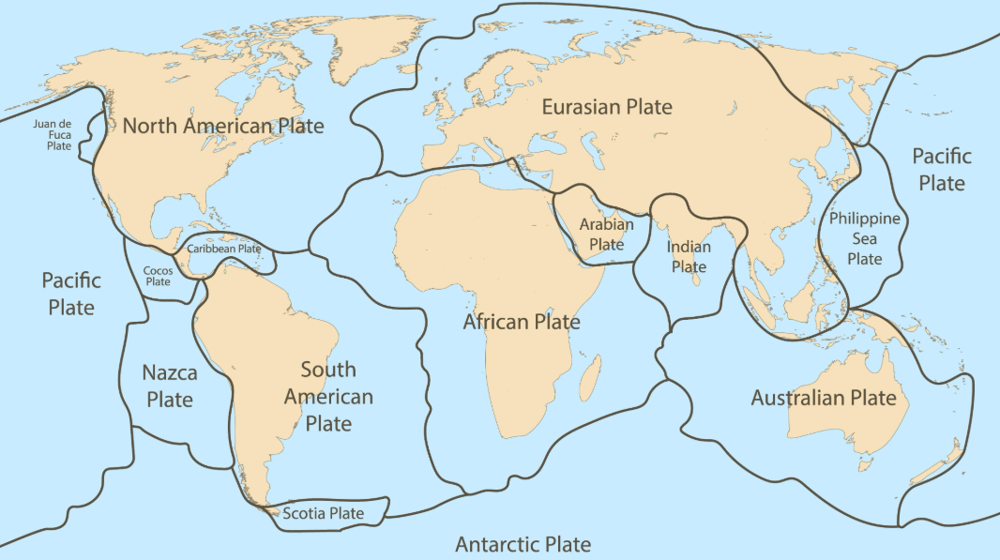

socrates
1.1 Waves in the Rocks
Earthquakes, Waves, and What They Mean for Us
Why Are We Talking About This?
Connecticut isn’t California, but the ground here isn’t perfectly still. Minor earthquakes, like the ones that sometimes happen near Moodus, CT, remind us that the same forces shaping the planet are at work here.
To understand the risk to a place like Branford, we first need to understand the science.
Today’s Core Idea
Earthquakes send out waves that travel through the Earth.
By understanding how these waves move, we can figure out where an earthquake happened and how strong it was.
Cornell Notes: Essential Questions
- How can we use invisible waves to find something we can’t see (the epicenter)?
- What is the difference between an earthquake’s strength (magnitude) and its danger (impact)?
- How can math help us understand and prepare for a natural hazard?
What Happens During an Earthquake?
- The ground shakes because energy is released deep underground.
- This energy travels as waves—like ripples in a pond.
Two Main Types of Waves
- $P$-waves (Primary): Fastest, arrive first.
- $S$-waves (Secondary): Slower, arrive after $P$-waves.

Types of Plate Boundaries
- Divergent: Plates move apart (new crust forms)
- Convergent: Plates move together (one may sink)
- Transform: Plates slide past each other
Different types of plate boundaries create different stresses and earthquake risks.

Global Plate Boundaries
Earthquakes are common along plate boundaries around the world.
Earthquake Waves
Earthquake waves travel outward from the epicenter. $P$-waves arrive first, $S$-waves arrive later.
How Do Scientists Use These Waves?
- Seismographs record when each wave arrives.
- The time between the $P$-wave and $S$-wave tells us how far away the earthquake was.
- The farther apart the waves arrive, the farther away the earthquake.

- Seismogram: A graph showing ground shaking during an earthquake.
- $P$-waves: Arrive first, smaller amplitude.
- $S$-waves: Arrive after $P$-waves, larger amplitude.
- S-P interval: The time between $P$ and $S$ wave arrivals.
- Why it matters: A longer S-P interval means the earthquake is farther away.
The Key Formula
To find distance:
\[\text{Distance} = \text{Speed} \times \text{Time}\]If you know how fast a wave travels and how long it takes, you can find out how far it went.
“I Do” Example: Finding Distance
A $P$-wave travels at $6\ \text{km/s}$ and takes $30\ \text{s}$ to reach a city.
- What is the distance?
-
Plug in the numbers:
- \[\text{Distance} = 6\ \text{km/s} \times 30\ \text{s} = 180\ \text{km}\]
“We Do” Example: Finding Time
An earthquake is $1,200\ \text{km}$ away. The $P$-wave travels at $8\ \text{km/s}$.
- How long does it take to arrive?
-
Rearranged formula:
- \[\text{Time} = \frac{\text{Distance}}{\text{Speed}}\]
- \[\text{Time} = \frac{1,200\ \text{km}}{8\ \text{km/s}} = 150\ \text{s}\]
Practice: S-P Interval
If the $P$-wave arrives at 10:05:15 and the $S$-wave arrives at 10:05:40:
\[\Delta t_{S-P} = t_{S\text{-wave}} - t_{P\text{-wave}} = 25\ \text{s}\]
Triangulation: Finding the Epicenter
To find the earthquake’s location, scientists use data from at least three seismograph stations. Where the circles overlap is the epicenter.
Two Ways to Measure a Quake
- Magnitude: The total energy released at the source. (Like the wattage of a lightbulb.)
- Intensity: The level of shaking and damage at a specific location. (Like the brightness you experience.)
Magnitude: How Much Energy?
- Measured using the Richter Scale or Moment Magnitude Scale.
- It’s a single number (e.g., 7.0).
- The scale is logarithmic: a 6.0 is about 32 times more powerful than a 5.0.
- Tells us the earthquake’s absolute strength, but not what it felt like in Branford.
Intensity: What Did It Feel Like?
- Measured using the Modified Mercalli Intensity (MMI) Scale.
- Uses Roman numerals (I-XII) to describe what people felt and how buildings were damaged.
- The same earthquake will have different intensity values in different towns.
The Mercalli Intensity Scale (Simplified)
| Intensity | Shaking Felt & Effects |
|---|---|
| I - IV | Barely felt, or like a truck rumbling by. Dishes might rattle. |
| V - VI | Felt by everyone. Some plaster might crack, windows could break. |
| VII - VIII | Difficult to stand. Furniture moves. Significant damage to weak buildings. |
This is the scale you will use to describe the potential hazard in your Scientist’s Hazard Report.
Why Does Intensity Differ?
Intensity in a specific place like Branford depends on:
- Distance from the epicenter.
- The local geology (solid rock or soft soil?).
- Vulnerability:
- How many people live there?
- How strong are the buildings?

Magnitude vs. Impact
Magnitude is not the same as impact. Vulnerability is the key difference.
Today’s Core Idea (Recap)
Scientists use the time between S- and P- waves to determine its location.
We measure an earthquake’s energy with a magnitude scale and its local effects with an intensity scale.
The real-world impact depends not just on magnitude, but on a community’s specific vulnerabilities.